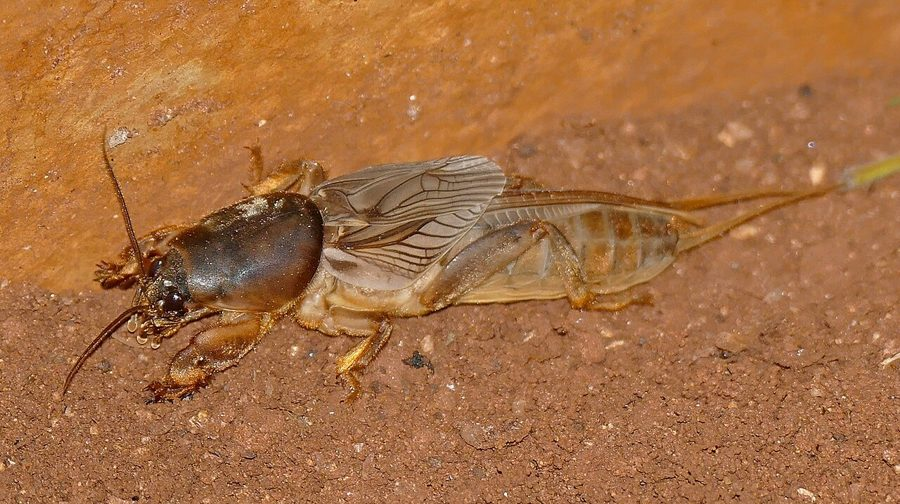

भुरभुरा कीड़ाAfrican Mole Cricket
Gryllotalpa africana · Gryllotalpidae · INS-0036

- Scientific name
- Gryllotalpa africana Palisot de Beauvois, 1805
- Family
- Gryllotalpidae
- Hindi
- भुरभुरा कीड़ा
- Status here
- native
- IUCN
- not evaluated
When to look कब देखें
Present all year.
भुरभुरा कीड़ा / African Mole Cricket
Gryllotalpa africana Palisot de Beauvois, 1805 — Gryllotalpidae
भुरभुरा कीड़ा (अफ्रीकन मोल क्रिकेट) — पूर्वी उत्तर प्रदेश के खेतों, बागों और नमी वाले स्थानों पर पाया जाने वाला एक विशिष्ट निवासी भूमिगत कीट है। यह इसे स्थानीय बोलचाल में "भुड़भुड़ा" भी कहा जाता है। यह कीट मिट्टी खोदने (digging) के लिए अत्यधिक अनुकूलित होता है; इसके आगे के पैर चौड़े, चपटे और कुदाल (shovel-like) जैसे होते हैं, जिनका उपयोग यह मिट्टी में सुरंगें बनाने के लिए करता है। यह अपना अधिकांश जीवन ज़मीन के नीचे गीली मिट्टी में बिताता है और जड़ों व छोटे कीड़ों को खाता है। मानसून की आर्द्र रातों (humid monsoon nights) में ये बड़ी संख्या में उड़कर घरों की रोशनी की ओर आकर्षित होते हैं। इनके ज़मीन खोदने की आदत के कारण खेतों की मिट्टी भुरभुरी हो जाती है, लेकिन कभी-कभी ये फसलों की जड़ों को काटकर नुकसान भी पहुँचाते हैं।
Quick Identification त्वरित पहचान
| Feature | Description |
|---|---|
| Size | Medium-sized, stout insect; body length 25–35 mm; wingspan 20–28 mm |
| Forelegs | Highly modified, broad, flat, and spade-like with dark teeth-like structures for digging |
| Colouration | Uniformly velvety-brown to yellowish-brown; abdomen is lighter underneath |
| Pronotum | Large, oval, and heavily hardened (pronotal shield); covers the head partially |
| Legs | Hind legs are short, thick, and not adapted for jumping |
| Behaviour | Crawls rapidly on the ground; tries to dig immediately when placed on soil |
Field tip: Look around outdoor lights or on damp porch floors on humid monsoon nights. Search for a medium-sized, stout, velvety-brown insect that looks like a cross between a cricket and a mole, crawling actively or trying to dig into corners using its spade-like front claws.
Morphology आकारिकी
Biometrics (typical measurements for adult specimens in local fields):
| Measurement | Range |
|---|---|
| Body length | 25.0–35.0 mm |
| Wing length | 20.0–28.0 mm |
Body details: The body is cylindrical, robust, and covered in a fine layer of velvety brown hairs. The head is conical with short antennae and small, dark compound eyes. The pronotum is large, thick, and rounded. The forelegs are highly modified for digging (fossorial), featuring broad, flat tibiae with four strong, dark, tooth-like projections (dactyls) used to shear soil. The middle legs are simple, while the hind legs are short and lack the jumping musculature found in true crickets. The forewings (tegmina) are short, while the hindwings are large, membranous, and folded longitudinally, extending beyond the abdomen.
Behaviour & Ecology व्यवहार और पारिस्थितिकी
Subterranean engineer.
- Tunnel construction: Digs two types of tunnels: shallow, horizontal tunnels close to the surface for feeding, and deep, vertical shafts (up to 1 metre deep) for overwintering, egg-laying, and escaping dry heat.
- Flight and swimming: Though slow on the surface, they are strong flyer at night and are capable of swimming across puddles when flooded out of their burrows.
- Stridulation: Males chirp at night from inside special horn-shaped burrow openings that act as acoustic megaphones, amplifying their deep, rhythmic, cricket-like hum to attract females.
Ecological Role पारिस्थितिक भूमिका
Soil aerator and omnivore.
- Soil engineering: Their digging activity mixes soil layers, improves aeration, and enhances rainwater absorption in compacted field margins.
- Trophic connector: Preys on soil-dwelling insect larvae, grubs, and worms, while also consuming plant material.
- Food source: Provides an abundant, high-energy food source for insectivorous birds, nocturnal owls, and small mammals.
Life Cycle / Phenology जीवन चक्र
- Breeding: Mating takes place during the warm, humid nights of July and August.
- Egg laying: The female constructs a smooth, spherical underground chamber at a depth of 10–20 cm, where she lays 100–200 yellowish eggs. She guards the eggs and young nymphs. Eggs hatch in 10–15 days.
Larval Stage
- Nymphal appearance: The nymphs (larvae) resemble adults in general body shape and fossorial front legs but are smaller, cream-colored, and completely wingless.
- Underground development: The nymphs remain in the underground burrows, feeding on soft root hairs and soil organic matter. They undergo 8–10 moults over 6–8 months, gradually developing wing buds before reaching adulthood in spring.
Host Plants or Prey आहार
Diet: Omnivorous.
- Plant roots: Roots of Paddy (Oryza sativa [FLR-0014 Paddy]), Potato (Solanum tuberosum), turf grasses, and vegetable seedlings.
- Soil prey: Earthworms (such as [SFL-0002 Earthworm]), beetle grubs (such as [SFL-0005 White Grub]), and soft soil pupae.
Predators / Natural Enemies शत्रु
- Birds: Common Hoopoes (such as [BRD-0033 Common Hoopoe]) probe the soil to extract them. Cattle Egrets (such as [BRD-0029 Cattle Egret]) capture them when fields are flooded.
- Amphibians: Large bullfrogs (such as [AMP-0008 Jerdon's Bullfrog]) feed on adults crawling on mud.
- Fungal pathogens: Naturally infected by the soil fungus Metarhizium anisopliae.
Agricultural / Human Relevance कृषि प्रासंगिकता
Mixed agricultural impact.
- Crop damage: Can become a minor pest in vegetable gardens and potato beds, as their tunneling cuts young root systems, causing seedlings to wither.
- Soil benefit: Aeration of clay soils is highly beneficial for orchards and field crops, helping root penetration.
- Weather lore: In eastern UP, their emergence in large numbers under house lamps is traditionally seen by farmers as a sign of steady, strong monsoon rains.
Expected Locally स्थानीय रूप से अपेक्षित
Not a field record. Written from published accounts for eastern Uttar Pradesh. No confirmed local sighting yet — if you have seen it, that is what the atlas needs.
अभी तक स्थानीय पुष्टि नहीं। यह विवरण प्रकाशित स्रोतों से है, किसी अवलोकन से नहीं।
Commonly found in wet agricultural lands along river basins in Basti, including Vikramjot and Harraiya blocks. During July after heavy rains, children often catch them on concrete verandahs, watching them try to burrow between fingers.
Distribution वितरण
Global range: Widespread in Africa, Southern Europe, South Asia, and East Asia.
In India: Found across all plains and agricultural tracts.
In Uttar Pradesh: Common resident in all agricultural districts.
In Basti district / eastern UP: Highly abundant in all rural and low-lying farming blocks.
Research Questions शोध प्रश्न
Anyone can investigate these | कोई भी इन प्रश्नों की जाँच कर सकता है
- How does the soil moisture level affect the burrowing speed of the African Mole Cricket in Basti soils? / मिट्टी की नमी का स्तर बस्ती की मिट्टियों में भुरभुरा कीड़े की खुदाई की गति को कैसे प्रभावित करता है? — Time burrowing speeds in dry, damp, and wet soil cups.
- Which crop roots (rice vs. potato) are preferred by mole crickets under laboratory feeding trials? / प्रयोगशाला फीडिंग परीक्षणों के तहत भुरभुरा कीड़े द्वारा किस फसल की जड़ों (धान बनाम आलू) को अधिक पसंद किया जाता है? — Perform root-choice feeding experiments.
- What is the sound frequency and decibel level of the male mole cricket's burrow song? — Record burrow song audio and analyze with software.
- Does the use of chemical pesticides in potato beds lead to a decline in local mole cricket populations? — Compare mole cricket counts in organic vs. chemical fields.
- Can children find empty digging tunnels or small mounds of loose soil in damp gardens and check if they belong to mole crickets? — A simple diagnostic search for subterranean activity.
Similar Species मिलती-जुलती प्रजातियाँ
| Species | Key Difference | हिंदी |
|---|---|---|
| Gryllus bimaculatus (Field Cricket) | Standard cricket body; long hind legs adapted for jumping; lacks shovel-like digging claws | काला झींगुर — कूदने वाले पैर, बिल खोदने वाले पंजे नहीं |
| Gryllotalpa orientalis (Oriental Mole Cricket) | Slightly smaller body; minor differences in the venation of forewings and structure of tibial dactyls | पूर्वी भुरभुरा कीड़ा — छोटा आकार |
| Schizodactylus monstruosus (Splay-footed Cricket) | Large body; pale yellow; wings have coiled tips; lives in sandy river banks; lacks digging tibiae | रेत का झींगुर — मुड़े हुए पंख, रेतीले किनारे |
Field rule: Medium size (~25–35 mm), velvety-brown cylindrical body, short hind legs, and broad spade-like front legs modified for digging identify the African Mole Cricket.
Taxonomy & Classification वर्गीकरण
Original description. Ambroise Marie François Joseph Palisot de Beauvois described the African Mole Cricket as Gryllotalpa africana in 1805 in Insectes recueillis en Afrique et en Amérique... (p. 229). The type locality was Oware, Nigeria. The genus name Gryllotalpa combines the Latin gryllus (cricket) and talpa (mole). The specific name africana refers to the continent of Africa where the type specimen was collected.
Subspecies. Monotypic — no subspecies are currently recognized.
Family and order placement. Placed in the order Orthoptera, suborder Ensifera, family Gryllotalpidae (mole crickets), subfamily Gryllotalpinae.
Phylogenetic notes. Gryllotalpa africana belongs to a group of subterranean orthopterans that underwent extreme morphological specialization for a fossorial lifestyle, representing one of the most striking examples of convergent evolution with mammalian moles.
IUCN status rationale. Not evaluated (NE) by the IUCN Red List. It is extremely common and widespread across South Asia, with no immediate conservation threats.
Photo Gallery फोटो गैलरी
References संदर्भ
- Palisot de Beauvois, A. M. F. J. (1805). Insectes recueillis en Afrique et en Amérique, dans les royaumes d'Oware, à Saint-Domingue, et dans les États-Unis, pendant les années 1786–1797. Paris, p. 229. [original description]
- Kirby, W. F. (1906). A Synonymic Catalogue of Orthoptera. Vol. II. Orthoptera Saltatoria. British Museum, London, p. 6.
- Mani, M. S. (1968). General Entomology. Oxford & IBH Publishing Co., New Delhi.
- Chopard, L. (1969). The Fauna of India and the Adjacent Countries. Orthoptera. Vol. 2. Grylloidea. ZSI, Calcutta, p. 8.
- ZSI Checklist — Orthoptera of Uttar Pradesh (2013).
- GBIF Occurrence Data — Gryllotalpa africana, Uttar Pradesh (2010–2025).
Source file: species/fauna/insects/mole_cricket.md